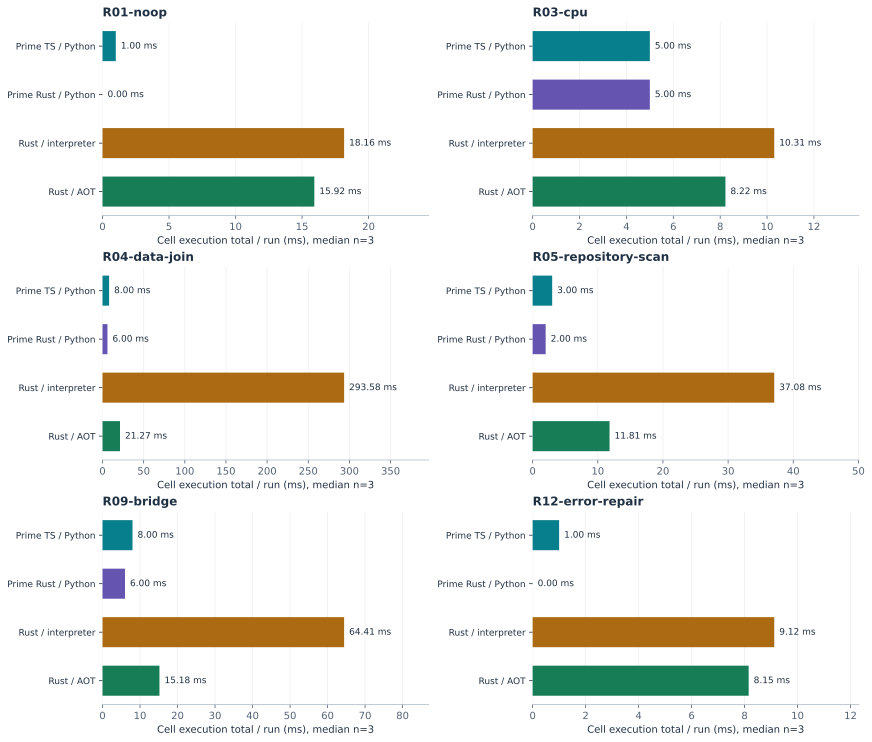
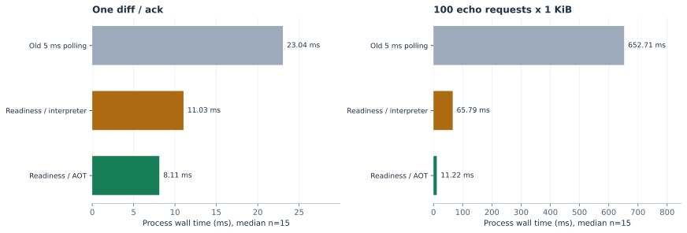

AOT and Bridge Readiness Tests — October 8, 2026
This reader uses sections from the current report. See its Opus task results for full task and compiler costs.
1. Fixed-program execution
The latest test has 6 cases × 4 variants × 3 repetitions. Both Wasm modes use identical Rust reference source. Python performs equivalent operations under the same output contract. This removes model-generation variance. It still includes differences between languages and libraries.
Values below are the median of three per-run cell execution totals, in milliseconds. They exclude Cargo, AOT compilation, initialization, and snapshots. Rust execution includes the new process, module load, VM, guest, bridge, and output drain. Python uses an existing kernel. A reported 0 ms is below its integer-millisecond resolution. R01 and R04 each have two cells.

| Case | Prime TS / Python | Prime Rust / Python | Rust / interpreter | Rust / AOT |
|---|---|---|---|---|
| R01-noop | 1.000 | 0.000 | 18.162 | 15.922 |
| R03-cpu | 5.000 | 5.000 | 10.306 | 8.224 |
| R04-data-join | 8.000 | 6.000 | 293.578 | 21.266 |
| R05-repository-scan | 3.000 | 2.000 | 37.079 | 11.805 |
| R09-bridge | 8.000 | 6.000 | 64.415 | 15.182 |
| R12-error-repair | 1.000 | 0.000 | 9.120 | 8.154 |
Data join fell from 293.578 ms in interpreter mode to 21.266 ms in AOT mode, a 92.8% reduction. Repository scan and bridge execution also improved. The short CPU case still took 8.224 ms in AOT, versus 5.000 ms in each Python kernel. A new process and VM impose a fixed cost on every Rust cell. The results support choosing a mode for the workload.
Earlier diagnostics confirmed that Python JSON uses the _json C accelerator. Rust serde_json runs as interpreted Wasm in interpreter mode. A near-empty process took about 8–10 ms. Guest work can be short while cell time remains limited by launch and load costs. The earlier runtime analysis contains CPU, JSON, regex, and state body timers. Its AOT and 1 ms polling tests were diagnostic controls before the product update. The implemented AOT path and readiness update are described below.
2. Controlled bridge comparison
The test used identical diff.rs and bridge.rs source bytes, the same handlers, and a 1 KiB payload. It alternated old polling, readiness-based interpreter, and readiness-based AOT execution. Each mode and case had two warmups and 15 measured samples. All 102 samples were saved. The chart and table use only measured-sample medians.

| Work | Old polling (ms) | Readiness interpreter ms | Readiness AOT ms |
|---|---|---|---|
| One diff / ack | 23.041 | 11.030 | 8.106 |
| 100 echo × 1 KiB | 652.714 | 65.795 | 11.224 |
For 100 echoes, process wall time fell from 652.714 ms to 65.795 ms after the readiness update, a 89.9% reduction. Normal WASI reply reads now use poll_oneoff to wait for stdin readiness or a monotonic deadline. They wake when data arrives. Native TCP and rare write retries keep their existing polling.
AOT reduced the total further to 11.224 ms. Guest-body medians are shown below; they exclude process launch and module/VM setup. After removing polling waits, interpreter execution and JSON framing still have measurable costs. We do not pool these results with earlier bridge tests under different scheduling conditions.
AOT compilation took another 2.74/2.76 seconds before execution. If a future trusted artifact cache allowed reuse, this fixed 100-echo workload would need about 51 executions to recover one 2.76-second compile cost at a saving of about 54.57 ms per execution. This is an arithmetic estimate under a reuse assumption. The current product recompiles every cell and does not receive this benefit.
Guest-body timing
| Work | Old polling body ms | Readiness interpreter body ms | Readiness AOT body ms |
|---|---|---|---|
| One diff / ack | 12.211 | 0.410 | 0.160 |
| 100 echo × 1 KiB | 639.344 | 53.548 | 3.207 |
These are the same alternating control samples as the process table. Body and process medians describe different boundaries; do not subtract them to reconstruct individual phases.
Implemented AOT path
rustCell.runtimeMode defaults to interpreter; aot adds a fourth comparison group. AOT checks imports, strips all guest custom sections, and compiles on the host with --interruptible and gas instrumentation when configured. The core Wasm must match the inspected input and a native payload must be present. Verification failure stops execution, without a silent interpreter fallback. Each cell compiles again; there is no AOT cache. Skill/library tests still use interpreter mode.
Stripped input, AOT output, and SHA-256 provenance stay in host-only .aot/, outside guest mounts. Compilation and execution share timeout, cancellation, and process-limit settings. The pinned WasmEdge 0.14.1 CLI loads AOT automatically; saved command records identify the flags. No newer run-mode flag was used.
aot.command measures compiler spawn-to-close time and excludes the Node wrapper's own startup. cell.aot_compile also includes stripping, verification, and provenance. It does not overlap runner cell.execution. All-Cargo capture includes initialization, cells, library gates, retries, and checkers; deductions are clipped to the selected task interval and count overlapping commands once.
Recorded AOT implementation checks
At implementation time, root checks and the full workspace build passed. Real interpreter/AOT integration passed 15 tests for large UTF-8 bridge messages, forbidden socket imports, fresh handshake after timeout, gas exhaustion, and memory-growth caps. Native bridge release tests passed 12/12; other related suites passed 86 tests with three environment-specific skips. These are earlier implementation checks, separate from the 65-pass/14-skip safety recheck above. Their counts must not be added together. No runtime tests were rerun to edit this report.
| Latest campaign | Schema-valid spans | Captured Cargo commands | Captured AOT commands |
|---|---|---|---|
| Fixed-program: 72 runs | 3,822 | 54 | 24 |
| Opus tasks: 16 runs | 1,600 | 32 | 8 |
Both Cargo-only and Cargo-plus-AOT deductions are available for all 88 runs. Paid sources and library edits were inspected for shell/subprocess delegation. All repair costs remain recorded; all AOT compiler failure counts were zero. Wrappers and small sample counts still limit performance claims.